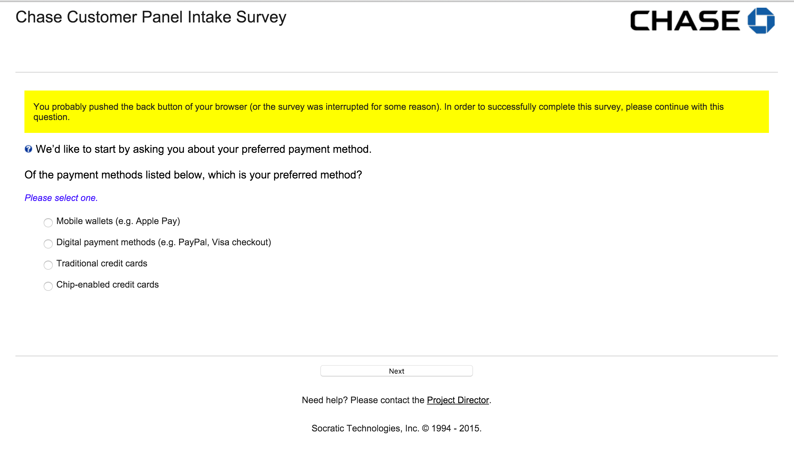
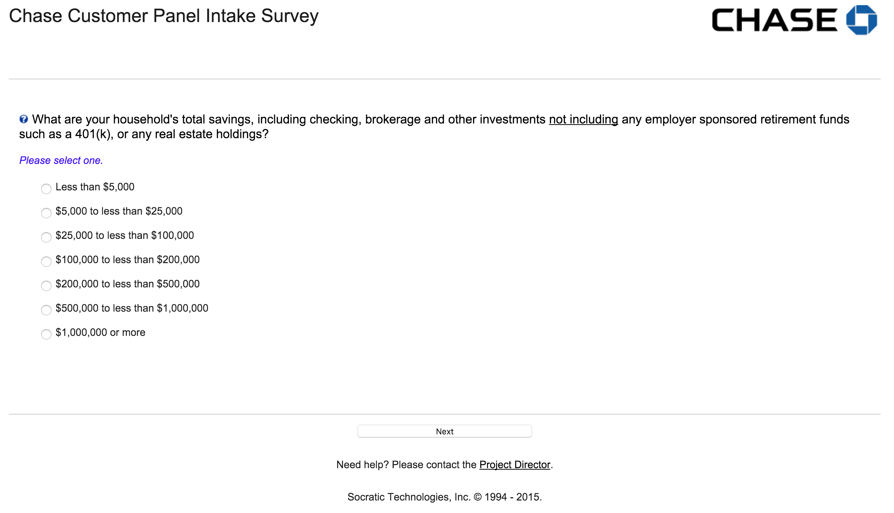

UX 201: Intro to User Research
Girl Develop It Boulder/Denver
June 3, 2017
Alicia C. Raciti
Good morning.
Thank you for waking up early on a Saturday to join us!
Ground rules for the day
- Breaks are scheduled, but take breaks when you need to.
- Participation makes this better.
- Ask lots of questions, anytime.
- You're here because you matter.
Today's Agenda
Times subject to change depending on what we need.
- 9:00-9:30: Introductions, what is UX, what is user research
- 9:30-10:00: Establishing research goals & objectives
- 10:00-10:45: Types of research
- 10:45-11:15: Determining participants & recruiting
- 11:15-11:30: BREAK!
- 11:30-12:30: Conducting research
- 12:30-1:00: Analyzing findings
- 1:00-1:15: Outcomes of research
- 1:15-1:30: Q&A/Parking Lot Review/What's Next
Things we'll learn today
- What user research and why is it important
- How to establish research goals & objectives
- Overview of research types
- How to determine who you need to talk to
- How to facilitate a research session
- What do to with all the research you've gathered
Introductions
- Your name
- Why you are taking this class
- Your friend is coming to town, what is the one restaurant you have to take them to?
About the instructor
- Alicia C. Raciti
- Twitter: @acr523
- Email: a.c.raciti@gmail.com
- Practicing UX since 2008
- Transplant to Denver from Philadelphia, PA

Quick UX Review
What is UX?
User experience design is a set of activities and philosophies that ensure users’ needs are understood, addressed, and – ideally – surpassed.
UX can encompass many other disciplines, and many other disciplines can encompass UX.
- UX101 Paul McAleer
User experience design without user research is not
user experience design.
- UX101 Paul McAleer
User interface design is not user experience design.
- UX101 Paul McAleer
...so why do the research and everything else that goes with it?
You are not your user!
- UX101 Paul McAleer
So what is user research?
User research focuses on understanding the behaviors, needs, motivations, and emotions of those who will be using or interacting with your product.
User research is not
market research.
The goal of market research is to gather information to identify what markets a product could succeed in.

User research is not
usability testing.
The goal of usability testing is to evaluate the success
of a product with users.

Why is user research important?
You are not your user.
What does user research provide?
- Removes assumptions made about users
- Gives you and your team data for decision making
- Provides insight into how audiences think about your company or product offering
- Can help identify new business opportunities
- Understand user behaviors and how they make decisions
Today's Challenge
Create and execute a research study for a company that sells jeans.
Research goals
& objectives
Identify your stakeholders
These are people or teams who would have a vested interest in the research you will be conducting.
Understand what your
stakeholders want to know
It's important to know what your stakeholders want to learn and why they feel like research is the way to get answers.
Conduct stakeholder interviews. Have them send you a list of questions they'd like to find answers to.
Example:
- Why do our customers like doing business with us?
- What is their perception of us and do they know our
total core offerings? - What could we do better?
- What product and services to our competitors offer that we don’t but you wished we could?
- What percentage of your budget do you spend
with our company?
Establishing research goals & objectives
Goals & objectives outline what type information the research activity will be capturing.
Example:
- Explore general decision-making process for selecting [industry] services specific to their role.
- Understand decision-making process for choosing our company.
- Explore relationship with the company.
- Explore future business needs
- Assess competitors
- Companies considered/used in the past and why. Benefits, including products and services offered, and issues with each.
- Explore any current use of competitors and reasons for the use.
Note: Stakeholders will be specific
with their needs
It will be up to you, the researcher, to figure out how to broaden their ask.
Workshop #1
Scenario
Jeannie's Jeans wants to understand why people buy jeans.
SH #1: Why do our customers keep buying from us?
SH #2: How can we make our jeans better?
SH #3: Do people even buy jeans anymore?
Activity — Time: 20 Minutes
- Create goals and objectives for what the study will accomplish.
Research methods
There are a number of
research methods
- Stakeholder interviews
- User interviews
- Competitive analysis
- Current state evaluation
- Ethnographic research
- Focus groups
- Analytic analysis
- + many more
Book recommendation
Universal Methods of Design
Bella Martin & Bruce Hanington

Qualitative vs. Quantitative Research
Qualitative
Provides underlying reasons for a problem and is directional in nature. The goal is to create a narrative that can give an idea as to why something is happening.
Quantitative
Helps quantify a problem. Statistics coming from quantitive research can demonstrate the size of a problem
that users are experiencing.
Attitudinal vs. Behavorial Research
Attitudinal
Captures what people believe their understanding is to be.
Behavorial
Captures the actions of what people actually do.
Nielsen Norman Group

https://www.nngroup.com/articles/which-ux-research-methods/
Today's focus
User Interviews
User interviews are the easiest way to get research started. They put you directly in touch with who is using your product.
Writing questions
What users say and do are different.
— Nielsen Norman Group
- Organize questions by topic
- Keep questions open ended
- Be specific if asking a user to recall an event
- Ask about current behavior
- Avoid asking users to predict their behavior
- Avoid leading questions
Workshop #2
Activity — Time: 20-25 minutes
Part I: Using the research goals & objectives created in the last workshop, individually write 3-5 questions that you would ask a participant in a user interview.
Part II: In small groups, share the questions you wrote. Combine questions into a single list of questions.
Keep in mind
- Section questions by topic
- Keep questions open ended
- Be specific if asking a user to recall an event
- Ask about current behavior
- Avoid asking users to predict their behavior
- Avoid leading questions
Determining participants & recruiting
Identifying your participants
Who can provide insight into your product?
Ways in which you can narrow the population
- Business line
- Demographic
- Roles & Responsibilities
Where to find participants?
- Website or email
- Through your business partners
- Outsourcing to a recruiting company
- Fieldwork offers recruiting services
- On the streets
How many participants?
Well... it depends.
If you're recruiting online,
you will need a screener.
Creating a screener
Definition: A screener is a series of questions that help to narrow your participant pool to those you want to talk to during the
actual research study.
Screener format
1. Introduction
Be clear about the purpose on why you're asking for their time and any incentive you are providing. Provide a clear link
to the screener questions.
Screener format
2. Screener questions
Questions asked should help to weed out any potential participants that do not fit the participant profile that you have determined.
Things to keep in mind
- Questions should map back to the types of participants
you have identified - No more than 10 questions
- Always ask for consent to contact
- Be cautious about asking for personal information
- If a question is closed-ended, make sure the list of options provided is exhaustive
Example: Screener questions
Example: Too personal of information
Screener format
3. Screener conclusion
Say thank you and state next steps. The screener is not the interview, so you probably should reiterate that the incentive will be paid out if they are selected to interview.
Workshop #3
Activity — Time: 15 minutes
Part I: Using the research goals & objectives, in groups determine what type of participants will provide answers to the questions you have.
Part II: For practice, create 3 screener questions.
BREAK!
15 minutes
Conducting research
Avenues for conducting research
Depends on the type of research being conducted.
- In-person
- Interviews
- Observations/Field studies
- Remotely
- Interviews
- Surveys
- Diary studies
In-person research
Either you are going to your participant or they are coming to you.
In-person research
Benefits
- Observe body language and facial expressions
- Easier to build rapport with your participant
- Ability to put a name to a face
- Gain context for the persons environment
In-person research
Disadvantages
- Can be expensive if you have to travel
- Time delays due to traveling
- Higher incentives if the participant is coming to you
- Risk of no-shows
In-person research
Going out into the field
Safety for you and your participant are number one priority.
- Bring a co-worker with you as a note taker or observer
- Let someone at your office know where you will be
If at any point you feel uncomfortable, it is okay to end the session.
Remote research
Benefits
- No one has to travel
- No geographic limitations
- Lower risk of no-shows
Remote research
Disadvantages
- Technical difficulties
- Participant must have and understand the technology
- May have challenges building rapport
Remote research
Tools
- Google Hangouts
- WebEx
- Conference line
- Simple phone call
Book recommendation
Remote Research
Nate Bolt & Tony Tulathimutte

Interacting with participants
- Build rapport with your participants, you want them to trust you
- Keep their stories are at the center of the interview
- Let your participant lead the conversation
- Master the awkward pause
- Do not correct your participants, ask them to clarify
Notetaking
Use whatever method you are most comfortable with.
Ideally, it will be easy to consolidate notes for when you analyze the interviews.
Structuring an interview
- Opening & Introductions
- Ask to record the session
- Signing of any legal paperwork
- Restate the purpose of the interview
- Opening questions about the participant
- Core interview time
- Time to ask the questions you created
- Use your list of questions as a guide, let the participant lead
- Closing & Next steps
- Thank the participant for their time
- Ask if they have any questions
- State how they will receive their incentive
- If necessary, communicate next steps
Roles & Responsibilities
- Participant Tells the story
- Interviewer Asks the questions
- Notetaker Captures the story
- Observer Listens to the story
Be clear that only the interviewer is to ask questions.
Post Research
Debrief as a group after the session.
- What was learned?
- What went well?
- What could be improved?
Book recommendation
Interviewing Users
Steve Portigal

Workshop #4
Activity — Time: 30 Minutes
Using the questions you created in workshop #2 plus additional questions you think of, facilitate a research session.
Three 7 minute interviews
In groups
- Assign roles
- Participant Tells the story
- Interviewer Asks the questions
- Note taker Captures the story
- Observer Listens to the story
Workshop #4
Interview #1 — Time: 7 minutes
Using the questions you created in workshop #2 plus additional questions you think of, facilitate a research session.
In groups
- Assign roles
- Participant Tells the story
- Interviewer Asks the questions
- Note taker Captures the story
- Observer Listens to the story
Workshop #4
Interview #2 — Time: 7 minutes
Using the questions you created in workshop #2 plus additional questions you think of, facilitate a research session.
Rotate roles clockwise
- Participant Tells the story
- Interviewer Asks the questions
- Note taker Captures the story
- Observer Listens to the story
Workshop #4
Interview #3 — Time: 7 minutes
Using the questions you created in workshop #2 plus additional questions you think of, facilitate a research session.
Rotate roles clockwise
- Participant Tells the story
- Interviewer Asks the questions
- Note taker Captures the story
- Observer Listens to the story
Analyzing findings
What to do with all of this data?
The goal of this research is to identify trends amongst the stories gathered from participants.
Things to look for
- Common words used
- Similar sentiment regarding a topic
Tools you can use
- Excel
- Google Docs
- Evernote
- Post-its and markers
- Reframer(Optimal Workshop)

Workshop #5
Activity — Time: 20 Minutes
Using the notes that were taken for each interview, organize them by common themes & give the groups a title.
Research Outputs
What do we do with all of this research?
Research readout
Typically some type of presentation deck that highlights research findings.
Personas
A documentation tool that humanizes a user by
capturing their goals and needs.

Book recommendation
Lean UX
Jeff Gothelf with Josh Seiden

Mental model diagrams
Capture how a user thinks about an experience.

Credit: Indi Young
Journey maps
Exposes how a client thinks about how they interact with a product or service over time.

Credit: Adaptive Path
Book recommendation
A Project Guide to UX Design
Russ Unger & Carolyn Chandler

Additional resources
Things to read
- Today's book recommendations
- Nielsen Norman Group: nng.com
- Smashing Magazine: smashingmagazine.com
- A List Apart: alistapart.com
- User Interface Engineering: uie.com
Places to go
- Denver UXers Slack Team — denveruxers.com
- UX Book Club Denver
- Midwest UX October 2017 — Cincinnati, OH
- An Event Apart Conferences — Various U.S. Cities
- Information Architecture Summit
Thank you!
Alicia C. Raciti
- a.c.raciti@gmail.com
- Twitter: @acr523